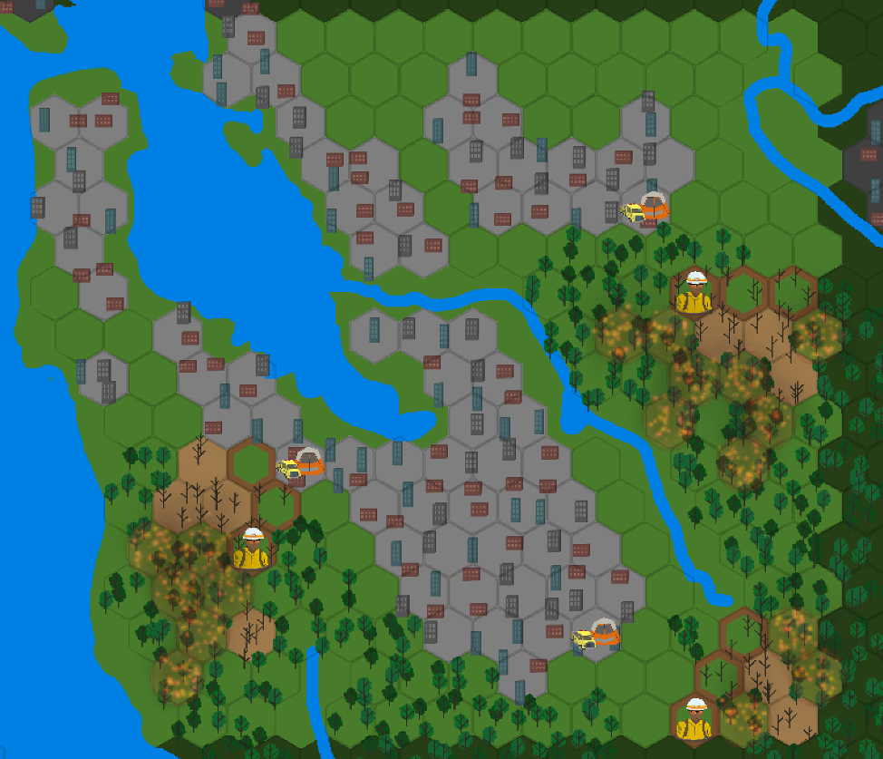

Fireline
Created with a team over the course of one semester as part of class ATL 497 (Rising Waters: A Climate Change Game), Fireline is a turn-based strategy game written in Unity. In a near-future dominated by wildfires, you step into the shoes of the director of Cal Fire, managing resources and commanding fire crews as you fight to quell the flames.